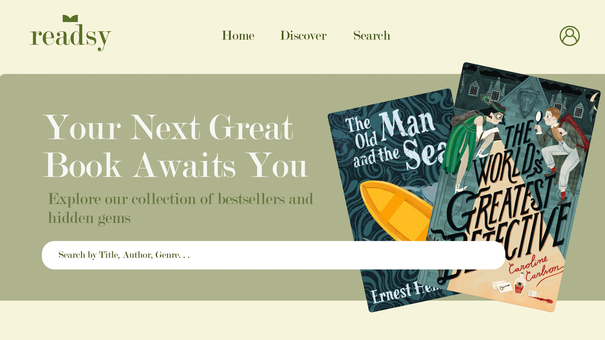
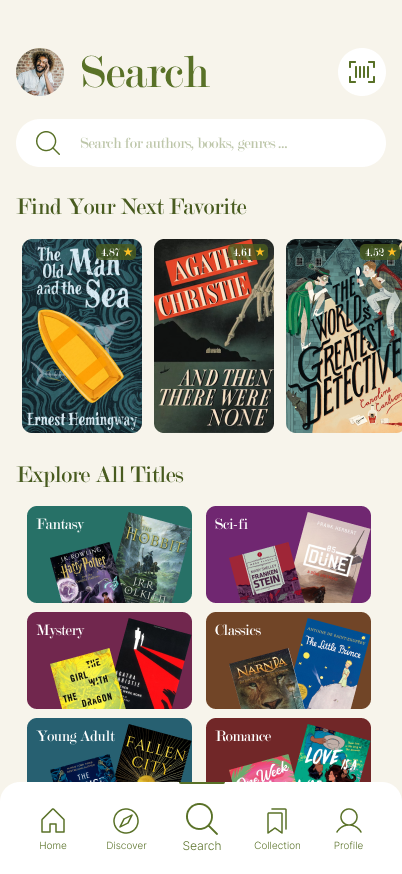
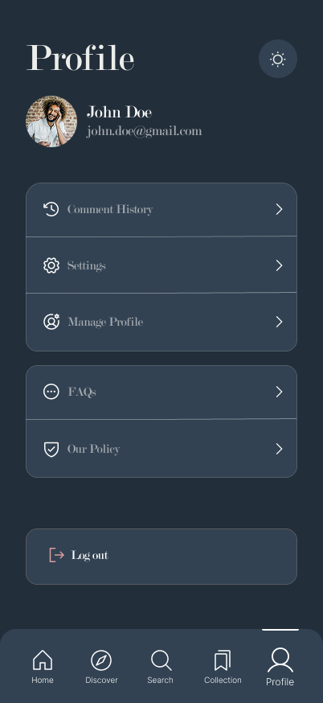

end-term-project-books
🚀 Readsy
Ez a projekt egy modern, teljes értékű monorepo architektúrát valósít meg, a Turborepo és a pnpm segítségével. Célja a type-safe fejlesztés, és a platformfüggetlen hitelesítés biztosítása.
📖 Téma
Azért választottuk ezt a témát mert célunk, hogy áthidaljuk a könyvválasztás nehézségeit, és egy olyan felületet biztosítsunk, ahol a felhasználók:
🧭 Segítenek egymásnak a könyvválasztásban: A userek ajánlanak és értékelnek, így könnyű megtalálni a következő kedvencet!
🗣️💬 Ösztönzi a beszélgetést: Lehet vitatkozni, megosztani a gondolatokat, és mélyebben elmerülni a könyvek világában.
🫂 Aktív közösséget épít: Minél több ember csatlakozik, annál több a segítség és az inspiráció!
📱 Megjelenés és UI (Showcase)
Az alkalmazás modern, letisztult felülettel rendelkezik, amely mind webes, mind mobil környezetben konzisztens felhasználói élményt nyújt.
💻 Webes Felület (React + Vite)
A webes felület a nagy képernyős böngészésre optimalizált, fókuszban a könyvek felfedezésével és az adminisztrációs feladatokkal.

Főoldal és keresési funkciók a webes platformon
🤳 Mobil Alkalmazás (Expo / React Native)
A mobil applikáció az on-the-go olvasóknak készült, gyors hozzáféréssel az értékelésekhez és a közösségi funkciókhoz.


Intuitív mobil felület és keresés nézet
🌟 Technológiai Stack
| Részleg | Fő technológia | Leírás |
|---|---|---|
| Monorepo Manager | Turborepo | Gyors buildelés és task futtatás a munkaterületek között. |
| Csomagkezelő | pnpm | Hatékony függőségkezelés szimlinkekkel. |
| Backend | NestJS (Fastify) | Skálázható, hatékony szerveroldali alkalmazás. |
| Web Frontend | React (Vite) | Gyors, modern webes felhasználói felület. |
| Mobil Frontend | React Native (Expo) | Natív mobilalkalmazások (iOS és Android). |
| Adatbázis ORM | Prisma | Type-safe adatbázis-hozzáférés és migrációk. |
| Hitelesítés | SuperTokens | Session és felhasználókezelés. |
| Séma Validáció | Class Validator | End-to-end type-safe adatsémák. |
| Tesztelés | Vitest | Megfelelő működés biztosítása backenden. |
📦 Monorepo Struktúra
A projekt a következő kulcsfontosságú munkaterületeket tartalmazza:
| Mappa | Leírás |
|---|---|
apps/backend |
A NestJS API a Fastify adapterrel. Felelős a business logika, adatbázis-kommunikáció és a SuperTokens autentikáció szerveroldali kezeléséért. |
apps/web |
A React webalkalmazás, Vite-tel buildelve. |
apps/mobile |
A React Native mobilalkalmazás (Expo-val konfigurálva). |
packages/database |
A Prisma konfiguráció (schema.prisma), migrációk, és a kliens kód. |
apps/mobile/.env.example |
A .env Fájl mobilhoz. Felelős a Google passwordless módon való bejelentkezésért. |
apps/backend/.env.example |
A .env Fájl backendhez. Felelős a Google kapcsolatokért, az adatbázis, S3 bucket-ek kapcsolatáért. |
🛠️ Beüzemelés (Local Development)
- Bővebben a beüzemeléséről a projektnek a SETUP.md fájlban értekezek.
- Amennyiben szeretnéd hogy az alkalmazás zökkenőmentesen fusson kérlek vedd figyelembe az alkalmazás szükségleteit .env.example fájlokban.
📚 A projekt erősségei: Type-Safety, Biztonság és Képkezelés
A projekt fő erőssége a type-safety :
- Class Validator: Az összes bejövő adat validálása DTO-k -on kereszetül történik és a class validátor biztosítja.
- Prisma Kliens: A
@repo/databasecsomag egy megosztott Prisma klienst és típusokat exportál, így a backend kódja mindig típusbiztosan kommunikál az adatbázissal. - Interceptorok: Az S3 bucketekben elhelyezhető képek típusbiztonságát saját kézzel megírt fájl interceptorok biztosítják ezáltal nem kerülhetnek más fájlok a bucket-ekbe csak amit mi megszabunk pl.: jpg, png .
Ezek mellet a projekt fő célja volt még a magas fokú biztonság is ezt SuperTokens-el valósítjuk meg:
- RBAC: A projekt részét képezi a Role Based Authentication melynek segítségével a userek között különbségeket tudunk tenni admin és sima userek között.
- Rotating Tokens: A felhasználó maximális kényelme érdekében session alapú a token kezelés ezért automatikusan frissíti a tokent ha lejárt. Ezenkívül ha bármelyik munkamenet korruptálódik a SuperTokens biztosít arról hogy megmaradjon a teljes biztonság mindezt úgy hogy leállítja az összes munkamenetet és újra be kell jelentkezni.
Képkezelés S3 bucket-okkal:
- Seeding: Ahhoz hogy könnyű legyen az S3 setupolása van előre megírva egy init bash script amely létrehozza a permission-öket, a vödröket amelyben tároljuk a képeket és a default képeket is betölti amelyek biztosítják hogy az alkalmazás és könyvek mindenképpen kapjanak egy filler képet.
- Kép feltöltés: A kép feltöltés az alkalmazás gyors betöltése érdekében sharp könyvtárat használva butítva vannak ezáltal a képek minősége kisebb lesz de viszont a betöltési idő növelve lesz.
- Ingyenes opció: Mivel szerettünk volna egy olyan projektet ahol szinte semmiért maximum az üzemeltetésért kelljen fizetni úgy gondoltuk hogy a localstack-et használjuk mely biztosít számunkra egy AWS instance-t amely ezáltal lehet egy olcsóbb megoldást biztosít és megadja a biztonságot abból a szempontból hogy az adatok a mi szervereinken helyezzük el.
✨ Főbb Funkciók
A projekt közösségi platform a következő, felhasználói élményt növelő funkciók lesznek beépítve:
-
⭐️ Értékelés és Véleményezés Ez a funkció teszi a platformot igazán közösségivé és interaktívvá.
- Rendszer: A felhasználók 1-től 5 csillagig terjedő skálán értékelhetik a könyveket.
- Vélemény hozzáadása: Lehetőség nyílik szöveges vélemény írására is, ami segíti a többi olvasót a választásban és ösztönzi a diskurzust.
- Átlagolás: Az egyes könyvek adatlapján megjelenik a felhasználói értékelések átlaga, mint megbízható minőségi mutató.
-
🔍 Intelligens Keresés A gyűjteményben való hatékony navigáció kulcsfontosságú.
-
Többdimenziós szűrés: A keresés nem csak a címre vagy szerzőre korlátozódik. Kereshetünk akár bio vagy description alapján is.
-
Gyors válasz: A beépített keresőmotor azonnali eredményeket szolgáltat gépelés közben.
-
Cél: Gyorsan és pontosan megtalálni a keresett könyveket, még a növekvő adatbázisban is.
-
-
🛡️ Adminisztrációs Oldal (Admin Panel) A tartalom és a felhasználói közösség kezelésére szolgáló központi irányítópult.
-
Könyvek kezelése: Az adminok hozzáadhatnak, szerkeszthetnek vagy eltávolíthatnak könyveket az adatbázisból.
-
Felhasználók felügyelete: Jogosultságok kezelése (pl. moderátorok kinevezése), vagy felhasználók felfüggesztése a közösségi irányelvek megsértése esetén.
-
Tartalom moderálása: A nem megfelelő könyvek és szerzők áttekintése és törlése, ezzel biztosítva a magas minőségű tartalmat.
-
🧪 Minőségbiztosítás és Dokumentáció
A projekt hosszú távú fenntarthatóságát és a fejlesztői élményt (DX) modern eszközökkel biztosítjuk.
✅ Tesztelési Stratégia
A stabilitásért a Vitest felel, amely villámgyors visszacsatolást ad a fejlesztés során.
- Unit Teszt fókusz: A logika nagy részét izolált egységtesztek fedik le, biztosítva a szolgáltatások (services) és segédfüggvények helyes működését.
- Prisma Mocking: Az adatbázis-műveleteket a tesztek során mockoljuk, így nincs szükség futó adatbázisra a teszteléshez, ami konzisztens és gyors futtatást tesz lehetővé.
- Type-safe tesztelés: A TypeScript szoros integrációjával a mockolt adatok is követik a sémákat.
📄 Dokumentációs Rendszer
A projekt két szinten dokumentált, hogy mind a külső integráció, mind a belső fejlesztés gördülékeny legyen:
- API Dokumentáció (Swagger/OpenAPI):
- A NestJS és Fastify alapokon nyugvó backend automatikusan generált, interaktív felületet biztosít.
- Kód-szintű Dokumentáció (TypeDoc):
- A forráskód belső összefüggéseit, az osztályokat és az interfészeket a TypeDoc segítségével dokumentáljuk.
ℹ️ Megjegyzés: A tesztek futtatásához és a dokumentáció generálásához szükséges parancsokat a SETUP.md tartalmazza.
📄 További dokumentációk
- Bővebben az Architektúránkról
- Bővebben a projekt SETUP-olásáról
- Bővebben a mobilhoz tartozó User Story-ról